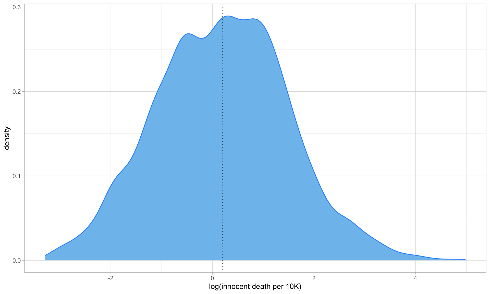

Regression-Model 1
Description
In this study, we are curious about the association between innocent death rate by police and potential factors. In this case, innocent death(per 10K) will be considered as dependent variable while some interests will be regarded as predictors so that multiple linear regression will be used to testify and assess whether the correlation is significant or not.
- For Model 1, predictors and variables are below:
- innocent death(per 10K): count of innocent death divided by state population and multiplied by 10K
- year: the year of death(2010 - 2020)
- state: the best state location where the injury causing death happened that we can find using Google Maps.
- age_bin: age divided into 6 groups(0-14, 15-24, 25-34, 35-54, 55-85, 85+)
- gender: Male, Female
- race: Usually based on visual evidence or official reports(European-American/White, African-American/Black, Native American/Alaskan, Asian/Pacific Islander, Hispanic/Latino)
Explorative Graphs
In order to comprehensively understanding the model 1, the distribution of predictors and variables (innocent death number, sex, age group, race) are plotted below from 2010 to 2020 and there’s a phenomenon that the proportion in each predictor is consistent though the total keeps changing. For more details of analysis, you could jump to trend plot part.
year_plot =
main_df %>%
filter(year %in% c(2010:2020)) %>%
group_by(year) %>%
summarize(count = n()) %>%
ggplot(aes(x = year, y = count, fill = as.factor(year))) +
geom_bar(stat = "identity") +
scale_x_continuous(breaks = c(2010:2020)) +
scale_fill_manual(
values = c(
"#CC543A",
"#E9A368",
"#b98b73",
"#cb997e",
"#ddbea9",
"#ffe8d6",
"#d4c7b0",
"#b7b7a4",
"#a5a58d",
"#6b705c",
"#3f4238"
)
) +
theme(legend.position = "none",
axis.text.x = element_text(angle = 45),
axis.title.x = element_blank())
sex_plot =
main_df %>%
filter(year %in% c(2010:2020)) %>%
group_by(year, gender) %>%
summarize(count = n()) %>%
ggplot(aes(x = year, y = count, fill = gender)) +
geom_bar(stat = "identity", position = position_dodge()) +
scale_x_continuous(breaks = c(2010:2020)) +
scale_fill_manual(values = c("#cb997e", "#867835"), labels = c("Female", "Male")) +
theme(legend.title = element_blank(),
axis.text.x = element_text(angle = 45),
axis.title.x = element_blank())
age_plot =
main_df %>%
filter(year %in% c(2010:2020)) %>%
group_by(year, age_bin) %>%
summarize(count = n()) %>%
ggplot(aes(x = year, y = count, fill = age_bin)) +
geom_bar(stat = "identity") +
scale_x_continuous(breaks = c(2010:2020)) +
scale_fill_manual(values = c("#a3a380","#d6ce93","#efebce","#d8a48f","#bb8588", "#f48498")) +
theme(
legend.title = element_blank(),
axis.text.x = element_text(angle = 45),
axis.title.x = element_blank()
) +
guides(fill = guide_legend(ncol = 6))
race_plot =
main_df %>%
filter(year %in% c(2010:2020)) %>%
group_by(year, race) %>%
summarize(count = n()) %>%
ggplot(aes(x = year, y = count, fill = race)) +
geom_bar(stat = "identity") +
scale_x_continuous(breaks = c(2010:2020)) +
scale_fill_manual(values = c("#a3a380","#d6ce93","#efebce","#d8a48f","#bb8588")) +
theme(
legend.title = element_blank(),
axis.text.x = element_text(angle = 45),
axis.title.x = element_blank()
) +
guides(fill = guide_legend(ncol = 3))combination_plt =
subplot(
ggplotly(year_plot),
ggplotly(sex_plot),
ggplotly(age_plot),
ggplotly(race_plot),
nrows = 2,
titleY = TRUE,
titleX = TRUE,
margin = 0.1
)
annotations = list(
list(
x = 0.2,
y = 1.0,
text = "Year",
xref = "paper",
yref = "paper",
xanchor = "center",
yanchor = "bottom",
showarrow = FALSE
),
list(
x = 0.8,
y = 1,
text = "Sex",
xref = "paper",
yref = "paper",
xanchor = "center",
yanchor = "bottom",
showarrow = FALSE
),
list(
x = 0.2,
y = 0.45,
text = "Age",
xref = "paper",
yref = "paper",
xanchor = "center",
yanchor = "bottom",
showarrow = FALSE
),
list(
x = 0.8,
y = 0.45,
text = "Race",
xref = "paper",
yref = "paper",
xanchor = "center",
yanchor = "bottom",
showarrow = FALSE
))
combination_plt =
combination_plt %>%
layout(showlegend = F, annotations = annotations)
combination_pltStatistical Analysis
1.Distribution of dependent variable(innocent death(per 10K))
The density plot below is the distribution of innocent death(per 10K) which we notice it is not satisfied of the assumption of the multiple linear regression so that we need to transform it.
# Find distribution of the target variable `innocent_kill_per100k`
reg_df1 %>%
ggplot(aes(x = innocent_kill_per100k)) +
geom_density(color = "dodgerblue1", fill = "skyblue2") +
geom_vline(xintercept = mean(reg_df1$innocent_kill_per100k), linetype = "dotted") +
labs(x = "innocent death(per 10K)")
2.Transformation
In order to get normal distribution, here we conduct log transformation. The plot followed is what we get by transformation and it almost satisfies the assumption of the multiple linear regression
# After transformation
reg_df1 %>%
ggplot(aes(x = log(innocent_kill_per100k))) +
geom_density(color = "dodgerblue1", fill = "skyblue2") +
geom_vline(xintercept = mean(log(reg_df1$innocent_kill_per100k)), linetype = "dotted") +
labs(x = "log(innocent death per 10K)")
3.Modeling
By transformation above, the formula is below:
\[ log(innocent \space death \space per \space 100k) = \beta_0 + \beta_1year + \beta_2state + \beta_3 age + \beta_4 gender + \beta_5 race\]
# Model 1 -- across all years in database
# Fit a model
fit1 <- lm(log(innocent_kill_per100k) ~ year + state + age_bin + gender + race, data = reg_df1)
summary(fit1) %>%
broom::tidy() %>%
knitr::kable() %>%
kable_styling() %>%
scroll_box(height = "200px")| term | estimate | std.error | statistic | p.value |
|---|---|---|---|---|
| (Intercept) | -17.4771721 | 6.3550561 | -2.7501208 | 0.0059792 |
| year | 0.0088940 | 0.0031510 | 2.8225948 | 0.0047829 |
| stateAL | -0.9751259 | 0.1171184 | -8.3259834 | 0.0000000 |
| stateAR | -0.7143967 | 0.1220852 | -5.8516236 | 0.0000000 |
| stateAZ | -0.9762401 | 0.1119234 | -8.7223954 | 0.0000000 |
| stateCA | -1.9133129 | 0.1053994 | -18.1529815 | 0.0000000 |
| stateCO | -0.8053986 | 0.1156925 | -6.9615454 | 0.0000000 |
| stateCT | -1.0959539 | 0.1364584 | -8.0314146 | 0.0000000 |
| stateDE | -0.1817259 | 0.1657085 | -1.0966596 | 0.2728442 |
| stateFL | -1.6793241 | 0.1086841 | -15.4514285 | 0.0000000 |
| stateGA | -1.5063060 | 0.1109401 | -13.5776547 | 0.0000000 |
| stateHI | -0.8181526 | 0.1457846 | -5.6120631 | 0.0000000 |
| stateIA | -0.5286406 | 0.1267045 | -4.1722334 | 0.0000307 |
| stateID | -0.2528257 | 0.1333734 | -1.8956232 | 0.0580688 |
| stateIL | -1.7588366 | 0.1115584 | -15.7660672 | 0.0000000 |
| stateIN | -1.0441833 | 0.1168838 | -8.9335131 | 0.0000000 |
| stateKS | -0.4010644 | 0.1179791 | -3.3994533 | 0.0006806 |
| stateKY | -0.8496913 | 0.1218143 | -6.9752998 | 0.0000000 |
| stateLA | -1.0658196 | 0.1171061 | -9.1013165 | 0.0000000 |
| stateMA | -1.5108951 | 0.1267318 | -11.9219892 | 0.0000000 |
| stateMD | -1.4233778 | 0.1175506 | -12.1086373 | 0.0000000 |
| stateME | -0.2027755 | 0.1471793 | -1.3777450 | 0.1683451 |
| stateMI | -1.4431084 | 0.1127801 | -12.7957725 | 0.0000000 |
| stateMN | -1.0528079 | 0.1179600 | -8.9251262 | 0.0000000 |
| stateMO | -0.9128596 | 0.1142723 | -7.9884606 | 0.0000000 |
| stateMS | -0.8308880 | 0.1204401 | -6.8987637 | 0.0000000 |
| stateMT | -0.0226050 | 0.1424377 | -0.1587011 | 0.8739109 |
| stateNC | -1.6202020 | 0.1149814 | -14.0909885 | 0.0000000 |
| stateND | 0.2581848 | 0.1801051 | 1.4335231 | 0.1517723 |
| stateNE | -0.1960224 | 0.1279746 | -1.5317294 | 0.1256539 |
| stateNH | -0.4582721 | 0.1598590 | -2.8667260 | 0.0041651 |
| stateNJ | -1.6595669 | 0.1175556 | -14.1172960 | 0.0000000 |
| stateNM | -0.2182738 | 0.1170650 | -1.8645531 | 0.0623039 |
| stateNV | -0.6108735 | 0.1169175 | -5.2248261 | 0.0000002 |
| stateNY | -2.2384269 | 0.1124025 | -19.9143954 | 0.0000000 |
| stateOH | -1.4200333 | 0.1145467 | -12.3969776 | 0.0000000 |
| stateOK | -0.5212405 | 0.1119228 | -4.6571436 | 0.0000033 |
| stateOR | -0.7492003 | 0.1247194 | -6.0070887 | 0.0000000 |
| statePA | -1.7273092 | 0.1144257 | -15.0954646 | 0.0000000 |
| stateRI | -0.0192068 | 0.2276193 | -0.0843814 | 0.9327566 |
| stateSC | -1.0217658 | 0.1158590 | -8.8190449 | 0.0000000 |
| stateSD | -0.0783748 | 0.1500194 | -0.5224312 | 0.6013938 |
| stateTN | -1.2211238 | 0.1182430 | -10.3272379 | 0.0000000 |
| stateTX | -1.7089449 | 0.1072073 | -15.9405606 | 0.0000000 |
| stateUT | -0.3999981 | 0.1239951 | -3.2259198 | 0.0012640 |
| stateVA | -1.5624211 | 0.1174759 | -13.2999317 | 0.0000000 |
| stateVT | 0.3131923 | 0.1843710 | 1.6987066 | 0.0894381 |
| stateWA | -1.0940134 | 0.1124643 | -9.7276492 | 0.0000000 |
| stateWI | -0.9445794 | 0.1190741 | -7.9327030 | 0.0000000 |
| stateWV | -0.2051339 | 0.1385176 | -1.4809228 | 0.1386916 |
| stateWY | 0.3856686 | 0.1651197 | 2.3356904 | 0.0195476 |
| age_bin15-24 | 1.0519203 | 0.0561490 | 18.7344549 | 0.0000000 |
| age_bin25-34 | 1.2895009 | 0.0558117 | 23.1044961 | 0.0000000 |
| age_bin35-54 | 0.8466577 | 0.0556151 | 15.2235297 | 0.0000000 |
| age_bin55-84 | 0.2454968 | 0.0585397 | 4.1936779 | 0.0000279 |
| age_bin85+ | 2.2862123 | 0.1217420 | 18.7791602 | 0.0000000 |
| genderMale | 0.9285918 | 0.0240640 | 38.5884621 | 0.0000000 |
| raceAsian/Pacific Islander | -0.4028476 | 0.0528607 | -7.6209207 | 0.0000000 |
| raceEuropean-American/White | -1.4309563 | 0.0235813 | -60.6817318 | 0.0000000 |
| raceHispanic/Latino | -0.6719026 | 0.0315505 | -21.2961329 | 0.0000000 |
| raceNative American/Alaskan | 0.6445710 | 0.0575762 | 11.1951010 | 0.0000000 |
summary(fit1) %>%
broom::glance() %>%
knitr::kable() %>%
kable_styling()| r.squared | adj.r.squared | sigma | statistic | p.value | df | df.residual | nobs |
|---|---|---|---|---|---|---|---|
| 0.7244886 | 0.7211087 | 0.6819863 | 214.3573 | 0 | 60 | 4891 | 4952 |
Based on the summary and statistics in the table above, we could conclude that all all predictor are significant in statistical aspect although some levels in state have no significant association.
When concentrating on the table of R.squared, we could figure out that \(R^2\) value is 0.72 which means that 72% of the variability in the outcome data can be explained by the model, especially if R-squared value r > 0.7 this value is generally considered strong effect size (Ref:Moore, D. S., Notz, W. I, & Flinger, M. A. (2013). The basic practice of statistics (6th ed.))
4.MLR dignostics
In order to further make sure the accuracy of model 1 and the homoscedasticity of residual, we draw four pictures which are Residuals vs Fitted, Normal QQ, Scale-Location and Residuals vs Leverage respectively.
- Residuals vs Fitted: show that we have equally spread residuals around a horizontal line without distinct patterns which indicate it has linear relationship
- Q-Q plot: Use for examining the normality assumption which is satisfied here
- Scale-Location: The assumption of homoscedasticity has been checked in that we can see a horizontal line with equally spread points.
- Residuals vs Leverage: shows that there’s no too many outlier points and influential points in the plot.
# Model diagnosis
par(mfrow = c(2, 2))
plot(fit1)